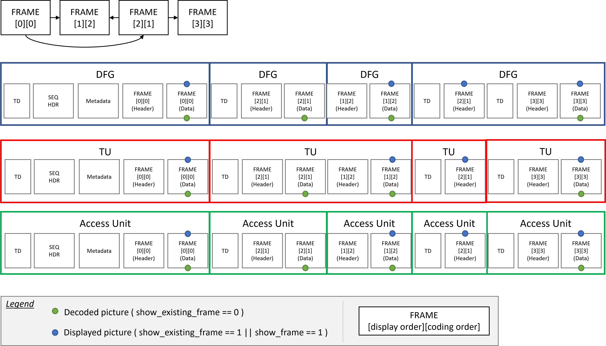

# Introduction
This document specifies how to carry AV1 video elementary streams in the MPEG-2 Transport Stream format.
It defines the carriage of AV1 in a single PID, assuming buffer model info from the first operating point. It may not be optimal for layered streams or streams with multiple operating points. Future versions may incorporate this capability.
## Modal verbs terminology
In the present document "shall", "shall not", "should", "should not", "may", "need not", "will", "will not", "can" and "cannot" are to be interpreted as described in clause 3.2 of the ETSI Drafting Rules (Verbal forms for the expression of provisions).
# Normative References
* AV1 specification, as hosted on the [AOM website](http://aomedia.org/av1/specification/), also known as "the AV1 Bitstream & Decoding Process Specification".
* MPEG-2 Transport Stream specification, **ISO/IEC 13818-1:2018**
* Digital Video Broadcasting (DVB); Specification for Service Information (SI) in DVB systems, **ETSI EN 300 468**
# Descriptor
## Registration Descriptor
The presence of a Registration Descriptor, as defined in MPEG-2 TS, is mandatory with the *format_identifier* field set to 'AV01' (A-V-0-1). The Registration Descriptor shall be the first in the PMT loop and included before an AV1 video descriptor.
## AV1 video descriptor
In a DVB ecosystem, the AV1 video descriptor based on a "Private data specifier descriptor" in ETSI EN 300 468 is used for carriage into DVB-specific tables, whenever it is required.
For an AV1 video stream, the AV1 video descriptor provides basic information for identifying coding parameters, such as profile and level parameters of that AV1 video stream. The same data structure as **AV1CodecConfigurationRecord** in ISOBMFF is used to aid conversion between the two formats, EXCEPT that two of the reserved bits are used for HDR/WCG identification.
| Syntax | No. Of bits | Mnemonic |
|:---------------------------------|:-----------:|:----------:|
| AV1_video_descriptor() { | | |
| **descriptor_tag** | **8** | **uimsbf** |
| **descriptor_length** | **8** | **uimsbf** |
| **private_data_specifier** | **32** | **uimsbf** |
| **marker** | **1** | **bslbf** |
| **version** | **7** | **uimsbf** |
| **seq_profile** | **3** | **uimsbf** |
| **seq_level_idx_0** | **5** | **uimsbf** |
| **seq_tier_0** | **1** | **bslbf** |
| **high_bitdepth** | **1** | **bslbf** |
| **twelve_bit** | **1** | **bslbf** |
| **monochrome** | **1** | **bslbf** |
| **chroma_subsampling_x** | **1** | **bslbf** |
| **chroma_subsampling_y** | **1** | **bslbf** |
| **chroma_sample_position** | **2** | **uimsbf** |
| **hdr_wcg_idc** | **2** | **uimsbf** |
| **reserved_zeros** | **1** | **bslbf** |
| **initial_presentation_delay_present** | **1** | **bslbf** |
| if (initial_presentation_delay_present) { |
| **initial_presentation_delay_minus_one** | **4** | **uimsbf** |
| } else { | | |
| **reserved_zeros** | **4** | **uimsbf** |
| } | | |
| } | | |
## Semantic definition of fields in AV1 video descriptor
**descriptor_tag** - This value shall be set to 0x5F.
**private_data_specifier** - This value shall be set to FIXME.
**marker** - This value shall be set to 1.
**version** - This field indicates the version of the AV1_Descriptor. This value shall be set to 1.
**seq_profile**, **seq_level_idx_0** and **high_bitdepth** - These fields shall be coded according to the semantics defined in AV1 Bitstream and Decoding Process Specification. If these fields are not coded in the Sequence Header OBU in the AV1 video stream, the inferred values are coded in the descriptor.
**seq_tier_0**, **twelve_bit**, **monochrome**, **chroma_subsampling_x**, **chroma_subsampling_y**, **chroma_sample_position** - These fields shall be coded according to the same semantics when they are present. If they are not present, they will be coded using the value inferred by the semantics.
**hdr_wcg_idc** - The value of this syntax element indicates the presence or absence of high dynamic range (HDR) and/or wide color gamut (WCG) video components in the associated PID according to the table below. HDR is defined to be video that has high dynamic range if the video stream EOTF is higher than the Rec. ITU-R BT.1886 reference EOTF. WCG is defined to be video that is coded using colour primaries with a colour gamut not contained within Rec. ITU-R BT.709.
| **hdr_wcg_idc** | **Description** |
|:---------------:|:----------------|
| 0 | SDR, i.e., video is based on the Rec. ITU-R BT.1886 reference EOTF with a color gamut that is contained within Rec. ITU-R BT.709 with a Rec. ITU-R BT.709 container |
| 1 | WCG only, i.e., video color gamut in a Rec ITU-R BT.2020 container that exceeds Rec. ITU-R BT.709 |
| 2 | Both HDR and WCG are to be indicated in the stream |
| 3 | No indication made regarding HDR/WCG or SDR characteristics of the stream |
**reserved_zeros** - Will be set to zeroes.
**initial_presentation_delay_present** - Indicates **initial_presentation_delay_minus_one** field is present.
**initial_presentation_delay_minus_one** - Ignored for MPEG-2 TS use, included only to aid conversion to/from ISOBMFF.
# Carriage of AV1
## Constraints for the transport of AV1
For AV1 video streams, the following constraints additionally apply:
* An AV1 video stream conforming to a profile defined in Annex A of AV1 Bitstream & Decoding Process Specification shall be an element of an MPEG-2 program and the stream_type for this elementary stream shall be equal to 0x06 (MPEG-2 PES packets containing private data).
* An AV1 video stream shall have the low overhead byte stream format as defined in AV1 Bitstream & Decoding Process Specification.
* The sequence_header_obu as specified in AV1 Bitstream & Decoding Process Specification, that are necessary for decoding an AV1 video stream shall be present within the elementary stream carrying that AV1 video stream.
* An OBU shall contain the *obu_size* field.
* OBU trailing bits should be limited to byte alignment and should not be used for padding.
* Tile List OBUs shall not be used
* Temporal Delimiters may be removed
* Redundant Frame Headers and Padding OBUs may be used.
In addition, a start code insertion and emulation prevention process shall be performed on the AV1 Bitstream prior to its PES encapsulation. This process is described in section 4.2.
## The TS Open Bitstream Unit format (tsOBU)
Prior to carriage into PES, the AV1 **open_bitstream_unit()** is encapsulated into **ts_open_bitstream_unit()**. This is required to provide direct access to OBU through a start-code mechanism inserted prior to each OBU. The following syntax describes how to retrieve the **open_bitstream_unit()** from the **ts_open_bitstream_unit()** (tsOBU).
| Syntax | No. Of bits | Mnemonic |
|:----------------------------------------------------------------|:-----------:|:----------:|
| ts_open_bitstream_unit(NumBytesInTsObu) { | | |
| obu_start_code /* equal to 0x01 */ | **24** | **f(24)** |
| NumBytesInObu = 0 | | |
| for( i = 2; i < NumBytesInTsObu; i++ ) { | | |
| if( i + 2 < NumBytesInTsObu && next_bits(24) == 0x000003 )| **8** | **f(8)** |
| open_bitstream_unit[NumBytesInObu++] | **8** | **f(8)** |
| open_bitstream_unit[NumBytesInObu++] | **8** | **f(8)** |
| i += 2 | | |
| emulation_prevention_three_byte /* equal to 0x03 */ | **8** | **f(8)** |
| } else | | |
| open_bitstream_unit[NumBytesInObu++] | **8** | **f(8)** |
| } | | |
**next_bits(n)** provides the next bits in the bitstream for comparison purposes, without advancing the bitstream pointer. Provides a look at the next n bits in the bitstream with n being its argument. When fewer than n bits remain within the byte stream, next_bits( n ) returns a value of 0.
**obu_start_code** - This value shall be set to 0x000001.
**open_bitstream_unit[i]** - i-th byte of the AV1 open bitstream unit (As defined in section 5.3 of AV1 Bitstream & Decoding Process Specification).
It is the responsability of the TS muxer to prevent start code emulation by escaping all the forbidden three-byte sequences using the **emulation_prevention_three_byte** (always equal to 0x03). The forbidden sequences are defined below.
Within the **ts_open_bitstream_unit()** payload, the following three-byte sequences shall not occur at any byte-aligned position :
* 0x000000
* 0x000001
* 0x000002
Within the **ts_open_bitstream_unit()** payload, any four-byte sequence that starts with 0x000003 other than the following sequences shall not occur at any byte-aligned position :
* 0x00000300
* 0x00000301
* 0x00000302
* 0x00000303
## The AV1 Access Unit
An AV1 Access Unit consists of all OBUs, including headers, between the end of the last OBU associated
with the previous frame, and the end of the last OBU associated with the current frame. An illustration is provided in the figure below for a group of pictures with frames predicted as follows :

Practical example of an AV1 Access Unit split
## Carriage of AV1 Access Units in PES packets
AV1 Bitstream & Decoding Process Specification video encapsulated as defined in clause 4.2 is carried in PES packets as PES_packet_data_bytes, using the stream_id 0xBD (private_stream_id_1).
A PES shall encapsulate one, and only one, AV1 access unit as defined in clause 4.3. All the PES shall have data_alignment_indicator set to 1. Usage of *data_stream_alignment_descriptor* is not specified and the only allowed *alignment_type* is 1 (Access unit level).
The highest level that may occur in an AV1 video stream, as well as a profile and tier that the entire stream conforms to, shall be signalled using the AV1 video descriptor.
If an AV1 video descriptor is associated with an AV1 video stream, then this descriptor shall be conveyed in the descriptor loop for the respective elementary stream entry in the program map table.
This specification does not specify the presentation of AV1 Bitstream & Decoding Process Specification streams in the context of a program stream.
For synchronization and STD management, PTSs and, when appropriate, DTSs are encoded in the header of the PES packet that carries the AV1 video stream data setting the PTS_DTS_flags to '01' or '11'. For PTS and DTS encoding, the constraints and semantics apply as defined in the PES Header and associated constraints on timestamp intervals. The PTS and DTS assignment rules are specified in section 5.
## Assignment of DTS and PTS
For AV1 video stream multiplexed into MPEG-2 TS, the *decoder_model_info* may not be present. If the *decoder_model_info* is present, then the STD model shall match with the decoder model defined in Annex E of the AV1 Bitstream & Decoding Process Specification.
To achieve consistency between the STD model and the buffer model defined in Annex E of the AV1 Bitstream & Decoding Process Specification, the following PTS and DTS assignment rules shall be applied :
|show_existing_frame|show_frame|showable_frame | PTS | DTS | Interpretation |
|:-----------------:|:--------:|:-------------:|:-------------------------:|:-------------------------:|:----------------------------:|
| 0 | 0 | 0 |ScheduledRemovalTiming[dfg]|ScheduledRemovalTiming[dfg]| PTS value shall not be used |
| 0 | 0 | 1 |ScheduledRemovalTiming[dfg]|ScheduledRemovalTiming[dfg]| PTS value shall not be used |
| 0 | 1 | n/a |PresentationTime[frame] |ScheduledRemovalTiming[dfg]| PTS and DTS values are valid |
| 1 | n/a | n/a |PresentationTime[frame] |ScheduledRemovalTiming[dfg]| PTS and DTS values are valid |
Note : The ScheduleRemovalTiming[] and PresentationTime[] are defined in the Annex E of the AV1 bitstream specification. For cases where the AV1 frames are decoded but not displayed, the assigned PTS value shall not be used. In this case, a DTS value shall be assigned, but the MPEG-2 TS specification prevent DTS from being transmitted without a PTS, which is the reason why a "dummy" PTS value is assigned.
## Buffer Pool management
Carriage of an AV1 video stream over MPEG-2 TS does not impact the size of the Buffer Pool.
For decoding of an AV1 video stream in the STD, the size of the Buffer Pool is as defined in AV1 Bitstream & Decoding Process Specification. The Buffer Pool shall be managed as specified in Annex E of AV1 Bitstream & Decoding Process Specification.
A decoded AV1 access unit enters the Buffer Pool instantaneously upon decoding the AV1 access unit, hence at the Scheduled Removal Timing of the AV1 access unit. A decoded AV1 access unit is presented at the Presentation Time.
If the AV1 video stream provides insufficient information to determine the Scheduled Removal Timing and the Presentation Time of AV1 access units, then these time instants shall be determined in the STD model from PTS and DTS timestamps as follows:
1. The Scheduled Removal Timing of AV1 access unit n is the instant in time indicated by DTS(n) where DTS(n) is the DTS value of AV1 access unit n.
2. The Presentation Time of AV1 access unit n is the instant in time indicated by PTS(n) where PTS(n) is the PTS value of AV1 access unit n.
## T-STD Extensions for AV1
When there is an AV1 video stream in an MPEG-2 TS program, the T-STD model as described in the section "Transport stream system target decoder" is extended as as specified below.
T-STD Extensions for AV1
#### TBn, MBn, EBn buffer management
The following additional notations are used to describe the T-STD extensions and are illustrated in Figure X-YY.
| Notation | Definition |
|:--|:--|
| t(i) | indicates the time in seconds at which the i-th byte of the transport stream enters the system target decoder |
| TBn | is the transport buffer for elementary stream n |
| TBS | is the size of the transport buffer TBn, measured in bytes |
| MBn | is the multiplexing buffer for elementary stream n |
| MBSn | is the size of the multiplexing buffer MBn, measured in bytes |
| EBn | is the elementary stream buffer for the AV1 video stream |
| EBSn | is the size of the multiplexing buffer MBn, measured in bytes |
| j | is an index to the AV1 access unit of the AV1 video stream |
| An(j) | is the j-th access unit of the AV1 video bitstream |
| tdn (j) | is the decoding time of An(j), measured in seconds, in the system target decoder |
| Rxn | is the transfer rate from the transport buffer TBn to the multiplex buffer MBn as specified below. |
| Rbxn | is the transfer rate from the multiplex buffer MBn to the elementary stream buffer EBn as specified below |
The following apply:
* There is exactly one transport buffer TBn for the received AV1 video stream where the size TBS is fixed to 512 bytes.
* There is exactly one multiplexing buffer MBn for the AV1 video stream, where the size MBSn of the multiplexing buffer MB is constrained as follows:
MBSn = BSmux + BSoh + 0.1 x BufferSize
where BSoh, packet overhead buffering, is defined as:
BSoh = (1/750) seconds × max{ 1100 × BitRate, 2 000 000 bit/s}
and BSmux, additional mutliplex buffering, is defined as:
BSmux = 0.004 seconds ×max{ 1100 × BitRate, 2 000 000 bit/s}
BufferSize and BitRate are defined in Annex E of the AV1 Bitstream & Decoding Process Specification
* There is exactly one elementary stream buffer EBn for all the elementary streams in the set of received elementary streams associated by hierarchy descriptors, with a total size EBSn:
EBSn = BufferSize
* Transfer from TBn to MBn is applied as follows:
When there is no data in TBn then Rxn is equal to zero. Otherwise:
Rxn = 1.1 x BitRate
* The leak method shall be used to transfer data from MBn to EBn as follows:
Rbxn = 1.1 × BitRate
* The removal of start-code and emulation prevention as defined in section 4.2 is achieved between MBn and EBn.
If there is PES packet payload data in MBn, and buffer EBn is not full, the PES packet payload is transferred from MBn to EBn at a rate equal to Rbxn. If EBn is full, data are not removed from MBn. When a byte of data is transferred from MBn to EBn, all PES packet header bytes that are in MBn and precede that byte are instantaneously removed and discarded. When there is no PES packet payload data present in MBn, no data is removed from MBn. All data that enters MBn leaves it. All PES packet payload data bytes enter EBn instantaneously upon leaving MBn.
## STD delay
The STD delay of any AV1 video through the system target decoders buffers TBn, MBn, and EBn shall be constrained by tdn(j) – t(i) ≤ 10 seconds for all j, and all bytes i in access unit An(j).
## Buffer management conditions
Transport streams shall be constructed so that the following conditions for buffer management are satisfied:
* Each TBn shall not overflow and shall be empty at least once every second.
* Each MBn, EBn and Buffer Pool shall not overflow.
* EBn shall not underflow, except when the Operating parameters info syntax has low_delay_mode_flag set to '1'. Underflow of EBn occurs for AV1 access unit An(j) when one or more bytes of An(j) are not present in EBn at the decoding time tdn(j).
# Acknowledgements
This Technical Specification has been produced by VideoLAN, with inputs from the authors mentioned below who are from the following companies: ATEME, OpenHeadend, Open Broadcast Systems, Videolabs under the direction of VideoLAN.
## Authors
- Jean Baptiste Kempf (jb@videolan.org)
- Kieran Kunhya (kierank@obe.tv)
- Adrien Maglo (adrien@videolabs.io)
- Christophe Massiot (cmassiot@openheadend.tv)
- Mathieu Monnier (m.monnier@ateme.com)
- Mickael Raulet (m.raulet@ateme.com)
- Thibaud Biatek (t.biatek@ateme.com)